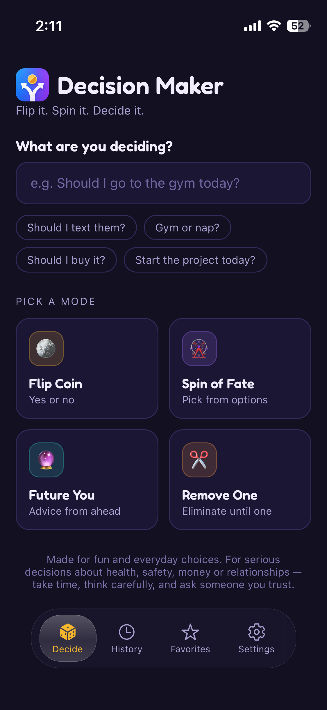
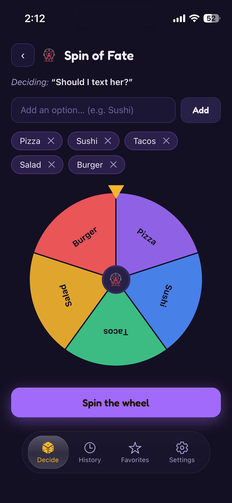
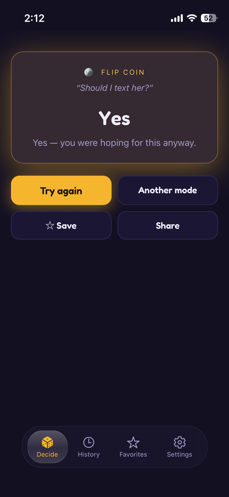
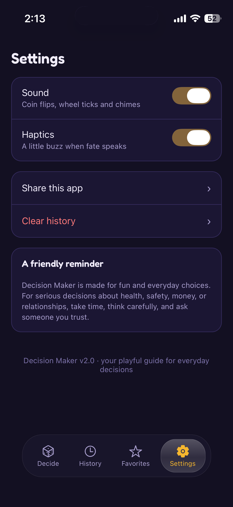

Ask a question
Type what you are deciding, from dinner plans to whether to start a small project.
Stop overthinking small choices
A fun, simple app that helps you make everyday decisions with playful tools like coin flips, fate wheels, Angel vs Devil advice, mood checks, and future-self prompts.



What it does
Type what you are deciding, from dinner plans to whether to start a small project.
Choose the style that fits the moment: random, reflective, playful, or instinctive.
Receive a clear answer, a short message, and a reason to stop circling the same thought.
App preview

Decision modes
A fast yes-or-no answer for simple choices.
Add multiple options and let the wheel choose one.
See two perspectives, then land on a balanced answer.
Think about how the choice might feel tomorrow.
Notice whether stress, tiredness, anger, or excitement is driving the decision.
Get a short prompt from the version of you who has to live with the outcome.
How it works
Enter your question or list of options.
Choose a decision mode that matches the moment.
Reveal the result, save it, share it, or try another mode.
Important note
Decision Maker is designed for fun and low-risk choices. For serious decisions about health, safety, money, legal issues, work, education, or relationships, take time to think carefully and ask someone qualified or trusted.